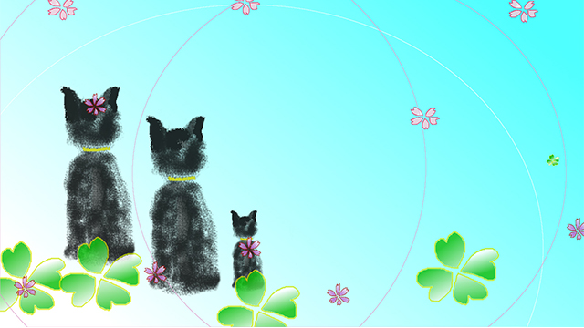

私たちは人生経験を積むにつれ、仕事であれ何であれ物事を要領よくスピーディかつ正確に進めていくコツをつかんでいきます。
いわゆる慣れですね。
仕事に限らず、朝起きて顔を洗い歯を磨きトイレに入り、靴をはいて玄関を出るという単純な動作も、いちいち考えたりせず自動で行なうことができる。当たり前ですね。そんなことにアレコレ手順を考えてやる人などいません。自転車の乗り方と同じで１度覚えたら後は自動モードに任せる。
そしてこれは「単純動作」だけでなく、私たちはこの「自動モード」をもっと複雑なもの―人間関係や状況、出来事―にも当てはめていきます。
「ああいうタイプとは気が合わない」
「こういう仕事は私に向かないんだよな」
「今のうちにこうしないとマズいことになる…」
「あの人はこう考えているに違いない」
「こんなこと言ったら変に思われるかな」...etc
私たちは過去の経験や知識で、他者や状況を瞬時に判断し自分の取るべき態度を決めます。私たちの脳は効率化を好むからです。
脳は過去の体験から共通項を引き出し、それらを圧縮した形でジャンルごとに分類します。なので新しい体験であっても過去の似たような例を参照し、なるべく労力を使わず同じような対処法で乗り切ろうとします。そのほうが楽だからです。
おかげで私たちは日常生活の大部分を無事に送ることができます。
それは
「日常生活の大部分を無意識の自動モードで過ごしている」とも言えます。
実はここに１つの落とし穴があります。
たとえば自転車の乗り方ひとつにしても、最初は何度も倒れたり転げ落ちて膝をすりむいたりして覚えたはずです。顔を洗う、トイレへ行く、靴をはくという動作も親に教えられしつけられて身につけたでしょう。
最初の経験。原初の体験です。そこには困難や苦しみもあった。人間関係の苦い経験もあったかもしれない。
その代わり達成感や新鮮な感動もあったはずです。
しかしいつの日かそれらの達成感や感動は、多くの似たような経験に吸収され分類され色褪せ、おなじみの自動モードに取って代わられる。
失われたのは原初の感動だけではありません。
日々の「新しい経験」さえ過去のヴェールを通して見ることによって、物事の真の姿―実相―を見抜く能力を衰えさせているのです。
先の例でいえば「コレはこういうもの」「アレはああいうもの」と決めつけたり思いこむことでカンタンに善悪や好悪のレッテルを貼り、制限し分断して真実をゆがめがちだということです。
子どもは要領の悪さを通して学んでいる
さて、この話を子育てにあてはめるなら、私たち大人は人生経験によって子どもの真の姿をゆがめて見ていることがあるということになります。
長年子をもつ親と話していると、親の心配ごとや悩みは20年前も30年前もあまり変わりません。
「試験が近いのになかなかヤル気を出さない」
「集中力が続かず困る」
「成績が一定しない。勉強のしかたが分かってないのでは…？」
「このままでは将来が心配」
「すぐ友だちに引きずられ主体性がない」など
これら親の心配ごとが何十年も変わらない点に注目して下さい。
つまりこれらは「大人特有の見方」なのだということです。
たとえば試験までのわずかしかないのに、我が子は一向に勉強する様子もなく学校から帰ると「疲れた！」と言って今日もソファでうたた寝してれば、親は心配になります。
そして我が子の要領の悪さを嘆くでしょう。
しかし、こう感じるのは親の「試験前一週間くらいになったらそろそろこのくらい勉強するのは当然だ」という、自分の人生経験から割り出した計算（データ）に基づく判断であり、自動モードの思考なのです。合理的かも知れませんが子どもの「実状」を理解したものではありません。
それだけでなく大事な要点を逃しています。
１つには子どもにも「子どもの人生」がありそれは大人の生活と同じく子どもなりに真剣勝負であるということ。
2つめは、子どもはまさにその「人生」の中で要領の悪さを通して「原初の体験」を学んでいる最中であること。
この２つの観点が親に欠けているということです。
子どもも中学生くらいになると勉強の他に部活や交友関係など忙しい中で、思春期特有の様々な悩み、トラブルを抱えそのストレスは大人並みかそれ以上といえます。
私もかつてそのような生徒の悩みをよく打ちあけられました。たとえば部活の部長をやっていて顧問の先生と部員の板バサミで悩む例も多く、聞けば聞くほど人間関係特有のあつれきにガンジガラメにされ身心をスリ減らす子も珍しくありませんでした。（この渦中においては勉強どころではないというのも致し方ありません。）
ここで重要なのは、それは子どもの世界といっても大人の世界と変わらぬ重みがあり、それは子どもにとって初めての経験―原初的体験―であるが故に大人以上に「苦しい経験」だということ。しかもその「苦しさ」は一方において貴重な試練であるということです。
要するに「自転車の乗り方」を苦労して覚えてる段階ということです。
子どもが勉強もせずソファでうたた寝をしている背景には、このように大人の事情ならぬ「子どもの事情」がある可能性もあるのです。
要領よく無難に切り抜ける術を人生経験の蓄積から身につけた大人（親）には、見落としがちな真実と言えるでしょう。
「私は何も知らない」と思って物事を見る
だからこう言うことができると思います。
子どもは「要領の悪さ」を通じてせっかく貴重な学びを経験しているのだから、親が先まわりをして「要領の良さ」を教えることは的はずれな教育をしているのだ。
親から見れば、子どもが試験が近いのにダラダラ寝てばかりいたり学校や塾の宿題を直前になってあわててやっていると「何て要領が悪いのか」「なんてダラシないの」と、その非効率な姿勢をとがめてしまいます。
みすみす損をする態度だと判断してしまうのです。
しかしそれは親自身が人生経験上、様々な失敗や苦労という原初的体験を積み重ねた過程で身につけた世間智という、いわば「結果」からの判断であって、子どもにとっては今まさにその原初の体験をしている最中であるということです。
だからむやみに心配したり先まわりして注意するのは、その貴重な「体験」を親が奪ってしまうことになりかねないのです。
さて、そんな親の皆さんにアドバイスするなら次のような話になります。
私たちは40を過ぎるころから、それまで積み重ねてきた経験、知識で物事を分類したり判断するのが長けてきます。そのおかげで「どう行動すべきか」「こういうときどう言うべきか」という立ち位置も理解でき、日常生活を平穏に乗り切る術を身につけてきました。
結果として最初の感動を忘れがちになり新しい経験でさえも「古いヴェール」を通して見てしまいます。
要するに全てを似たような「経験」の範ちゅうから見てしまう。
これが極端になると、人生から新しいモノは何もなくなり、全てが過去の「記憶映像」のように感じます。毎日が同じ日常のくり返しに感じ、街並みも行き交う人々も個人的人間関係もグレーに染まったように印象になります。
もし、「人生が停滞している」ように感じるなら、その人はあまりに積み重ねた経験と知識を重くしすぎているのかも知れません。
これ（人生の停滞）を避けるには１つの方法があります。
それは「自分は何も知らない」という生き方であり、物事に対してもいま始めて見る光景だ」という接し方です。
私たちは「知らないことがある」ことを恐れ知識を積み重ねることで自分を守ってきたわけですが、その結果として全ての対象を概念化し対象のもつダイナミックな生命力を感じ取るハート（感性）を鈍らせてきました。
「自分は何も知らない」「これらは始めて見る光景だ」という捉え方は、幼な児の目を取り戻す作業であり、また我が子から学ぶことにもつながります。
全ての物事―人間、状況、出来事―をいま初めて見るように見る。「何も知らない」という心のありまさまで見ること。
おなじみの光景に新しい光を当てることで今まで見えていなかった「実相」が浮かび上がります。
いつも歩き慣れている町角の光景。人々の喧騒や雨に濡れた街路樹の緑の鮮やかな様子。
「世界はこんなにも美しかったのか」
そう感じるならそのとき私たちは「実相」に触れているのです。
どうして気づかなかったのか。それはずっとそこにあったのに…という思いです。
相変わらず要領の悪い我が子のふるまいを見るとき、全ての判断を止めてじっと見てみましょう。
そう、始めてその子を見る目で見てみましょう。
そこにどんな実相が浮かび上がるか。
いつもやっているオートマチックな反応を少しだけ止めて、ありのままの子どもの姿を曇りのない目で見てみるのです。
そのとき子どもが限りなく愛おしく感じるかも知れません。いつもそこにあったのに見逃していた我が子の側面―本当の姿を―あなたは発見したのです。